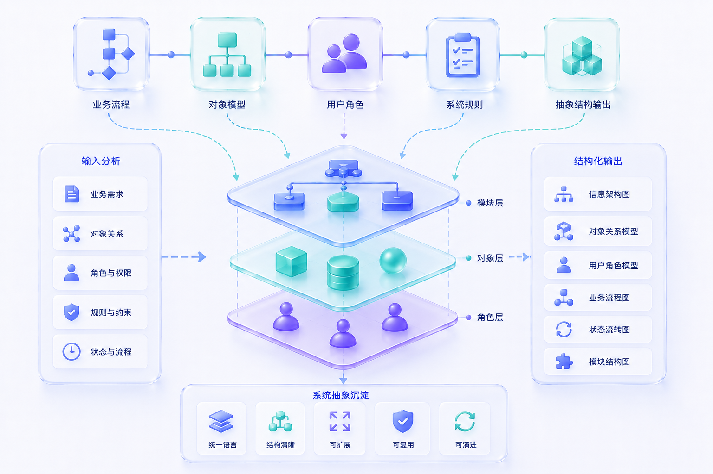

The core value of information architecture and system abstraction is turning vague, scattered, constantly changing requirements into product frameworks that can be discussed, designed, and implemented.
My design focus is to find the core relationships behind the system: how business objects connect, how user roles collaborate, how states change, how rules take effect, how tasks are completed, and how modules form stable boundaries.
Building the System Structure
In the early stage of a project, I build the system structure around objects, roles, processes, states, and rules.
Through object modeling, process breakdown, role relationship mapping, state transition analysis, and module boundary definition, complex business problems can be translated into clear structural expressions.
This helps teams identify core problems faster, reduce ambiguity in requirement discussions, and build a shared foundation for page design, interaction design, and future system expansion.
Clarifying the Stable Parts
Good system abstraction starts by identifying what is truly stable in the product.
For example, which objects are core objects, which states affect workflows, which rules need to be configurable, which operations need to be tracked, and which information needs to be shared by different roles.
Only after these relationships are clear can page structure, navigation, operation paths, and state feedback form a consistent experience.
From Uncertainty to Scalable Structure
This capability is especially suitable for complex platforms, enterprise products, AI workflow products, and zero-to-one product building.
When facing uncertain requirements, I build the structure first and then move into experience design, so the product has a clear organization method and sustainable expansion foundation from the beginning.
The final goal is to make complex systems easier for teams to understand, easier for users to operate, and easier for products to iterate over the long term.
Suitable Scenarios
Product architecture design, information architecture design, object modeling, complex system abstraction, platform capability breakdown, business rule organization, module boundary definition, and zero-to-one product structure building.
Deliverables
Information architecture diagrams, object relationship models, user role models, business process diagrams, state transition diagrams, module structure design, core page frameworks, product experience principles, and design notes.